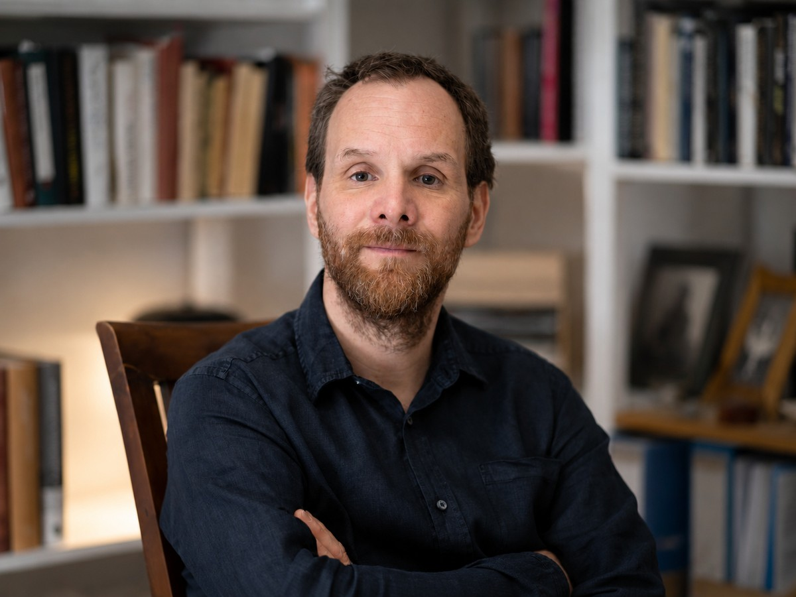
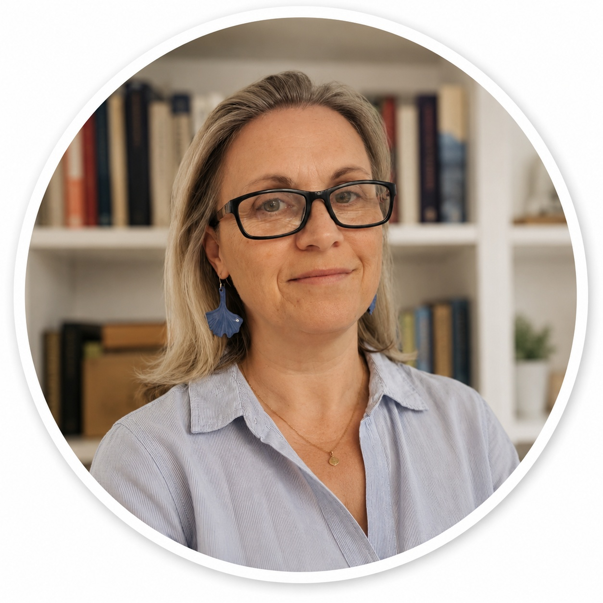

A fejlődés az egyénben történik
A gyermek fejlődését nem lehet kívülről létrehozni. Saját tapasztalatain, kapcsolódásain, kérdésein és jelentésalkotásán keresztül bontakozik ki.
Relational System Design for Human Development
A fejlődés az egyénben történik. A kapcsolati rendszer teremti meg hozzá a feltételeket.
Az ARSDOMA egy kapcsolati rendszertervezési keret, amely azt vizsgálja, milyen emberi és intézményi feltételek között tud egy gyermek biztonságban kapcsolódni, önazonosan fejlődni, tanulni és alkotni.
Nem abból indulunk ki, hogy mit kell létrehozni a gyermekben, hanem abból a kérdésből:
01 / Alapok
A gyermek fejlődését nem lehet kívülről létrehozni. Saját tapasztalatain, kapcsolódásain, kérdésein és jelentésalkotásán keresztül bontakozik ki.
A család, a pedagógusok, a kortársak, a szakemberek és az intézményi működés együtt alakítják azt a közeget, amelyben a fejlődés megtörténhet.
A biztonság, az önszabályozás és az autonómia kapcsolatokban fejlődik. Amit kezdetben a környezet tart meg a gyermek számára, abból idővel saját belső erőforrás válhat.
02 / Kiindulópont
Az ARSDOMA egyik alapvető kérdése:
A biztonság nem általános tulajdonsága egy kapcsolatnak vagy intézménynek.
Nem attól lesz jelen, hogy egy rendszer biztonságosnak, elfogadónak vagy gyermekközpontúnak nevezi magát.
A biztonság mindig a másik tapasztalatában dől el.
Ezért a kapcsolati biztonság kiindulópontja a konkrét gyermek megismerése: érzékenységeinek, szükségleteinek, határainak és kapcsolódási módjainak megértése.
A kérdés nem pusztán az, hogy mit tesz jól a felnőtt.
Hanem az is:
03 / Tanulás
Az ARSDOMA számára a tudás és a teljesítmény fontos.
De a kérdés mindig az:
A tanulás akkor válik valódi fejlődési eszközzé, ha segíti a gyermeket abban, hogy egyre gazdagabban kapcsolódjon önmagához, másokhoz és a világhoz.
Ezért nemcsak azt figyeljük, mit tud, hanem azt is, hogyan van jelen a tanulásban:
Az alkotás ebben az értelemben nem kizárólag művészeti tevékenység.
Alkotás minden olyan folyamat, amelyben a gyermek nem pusztán reprodukál, hanem valami sajátot hoz létre.
Tanulás és alkotás04 / A rendszer
A gyermek fejlődése nem rendelhető hozzá egyetlen pedagógushoz, szakemberhez vagy intézményhez.
Az ARSDOMA a teljes kapcsolati rendszerben gondolkodik:
A szülő nem az iskola külső segítője.
A pedagógusnak nem kell egyedül hordoznia minden fejlődési feladatot.
A szakemberek pedig nem különálló problémákat kezelnek.
A cél egy olyan reflektív, összehangolt kapcsolati rendszer, amelyben a különböző nézőpontok ugyanannak a gyermeknek a jobb megértését szolgálják.
És amikor valami nem működik, nem kizárólag azt kérdezzük:
Mi a probléma a gyermekkel?
Hanem azt is:
05 / Visszajelzés
Nem abból, hogy egy rendszer milyen módszereket alkalmaz.
És nem pusztán abból, hogy mit állít saját magáról.
Hosszabb távon többek között azt vizsgálhatjuk, hogyan változik:
A gyermek viselkedése így nem egyszerűen eredmény vagy probléma.
Ez teszi lehetővé, hogy az ARSDOMA ne csak a gyermek fejlődését kövesse, hanem saját működését is folyamatosan vizsgálja és korrigálja.
Kutatás és értékelés06 / Technológia
Az ARSDOMA-ban a mesterséges intelligencia nem gyermekkel kapcsolatot létrehozó tanár, mentor vagy társ.
A kapcsolati és fejlődési felelősség emberi marad.
Az AI a felnőtt szakmai rendszer gondolkodását támogathatja:
Ezt nevezzük metamentális támogatásnak.
Az AI nem hordozza a fejlődést.
Segíthet jobban megérteni azt.
07 / Jelenlegi státusz
Az ARSDOMA elméleti és szakmai keretrendszere kidolgozott, miközben konkrét intézményi megvalósítása és empirikus vizsgálata továbbra is fejlesztési és kutatási folyamat része.
A következő lépés olyan kislétszámú és intézményi pilotok kialakítása lehet, amelyekben a keretrendszer gyakorlati működése vizsgálható, továbbfejleszthető és kutatható.
Jelenleg nincs meghirdetett ARSDOMA-program.
Nem kész módszert szeretnénk másolni egyik helyről a másikra.
08 / Kutatás
Az ARSDOMA fejlődéslélektani, kapcsolati, fenomenológiai és preventív pedagógiai megközelítésekre épít, miközben saját rendszerszintű elméleti keretet fejleszt.
A kutatási munka jelenlegi fő területei:
A részletes tudományos háttér és a kutatási program külön felületen érhető el az arsdoma.org oldalon.
Kutatás és publikációk09 / Emberek

Alapító · klinikai szakpszichológus
Munkájában a kapcsolati biztonság, a mentális egészség megőrzése és az önazonos fejlődés feltételeinek rendszerszintű megértése áll a középpontban.
LinkedIn profil
Társalapító · pedagógus
Gyakorló pedagógus, aki évtizedek óta a gyermekek számára biztonságos, megtartó fejlődési környezet kutatásán és megteremtésén dolgozik.
LinkedIn profil10 / Kapcsolódás
Az ARSDOMA nyitott azok felé, akik a gyermekek fejlődésének kapcsolati feltételeit szeretnék újragondolni.
Iskolák, közösségek és szervezetek, amelyek gyakorlati együttműködésben gondolkodnak.
Pedagógusok, pszichológusok, kutatók, alkotók és más szakemberek.
Akik szeretnék követni az ARSDOMA fejlődését és későbbi programjait.
Nem kész válaszokból indulunk ki.
11 / Gondolkodási tér
Az ARSDOMA Blogon keresztül követhetővé tesszük, hogyan alakul a gondolkodásunk, a gyakorlatunk és a közös tanulási folyamatunk.
Blog megnyitása